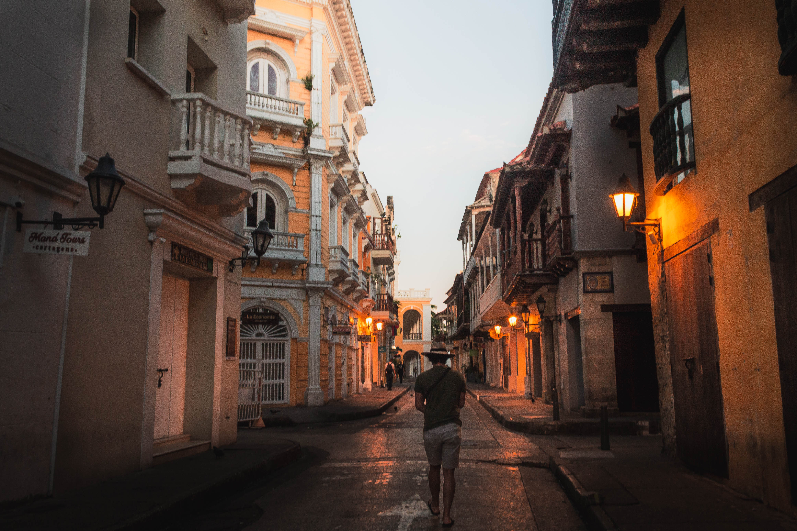
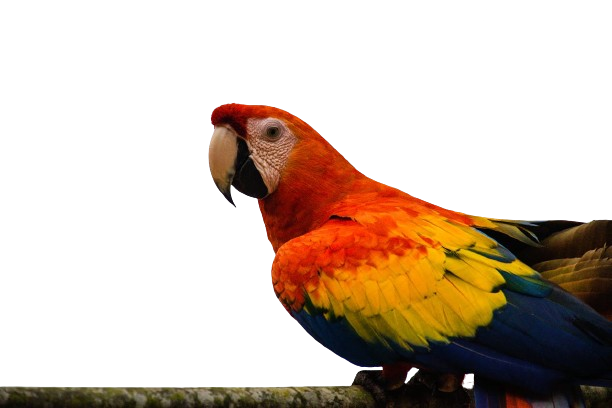

la comida de la calle
la comida de la calle
Discover our blog filled with culinary tips, chef tricks and inspiring stories that will bring your passion for cooking to life. Whether you're looking for advanced cooking techniques, quick weeknight meal ideas or seasonal recipes, our blog is your daily source of inspiration. Stay tuned and let us surprise you with the wonders of the kitchen.


